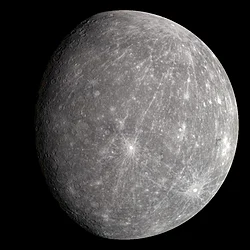

(點擊圖片開啟 3D 模型視窗)
🌑 基本概覽
| 類型 | 類地行星 |
|---|---|
| 平均直徑 | 約 4,879 km (太陽系最小) |
| 軌道距離 | 約 0.39 AU (離太陽最近) |
| 自轉週期 | 約 58.6 地球日 |
| 公轉週期 | 約 88 地球日 |
| 表面溫度 | -180°C 至 430°C (極端溫差) |
🔍 關於 水星 (Mercury)
水星是太陽系中體積最小且最接近太陽的行星。因為離太陽太近，它的大氣層幾乎被太陽風吹散，這導致它無法保存熱量，產生了劇烈的晝夜溫差。
在地科學習中，水星最著名的特徵是其佈滿隕石坑的表面（類似月球）以及極高的公轉速度。它是內太陽系中密度第二高的行星，擁有一個巨大的金屬核心。